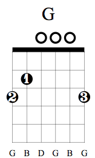
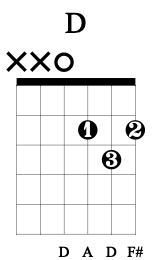
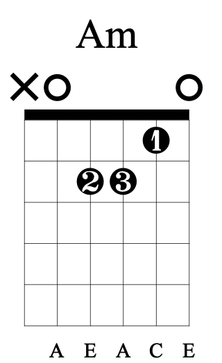

GuitarStarter
Holding the Guitar
Position Playing
Scales and Exercises
Chords
Chords
Stretch those fingers!
Chords are the backbone of a song. Learning chrods is essential to learning songs. Here are some.



8 Beginner Chords
Downloadable Chart
Back to Home